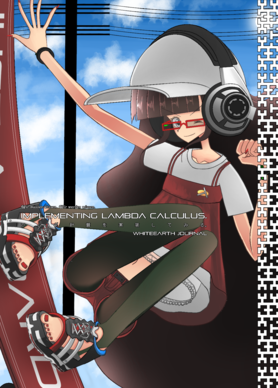

ラムダ計算のコンパイラをつくってみた
https://bydriv.github.io/blog/lamb.html
created at
updated at
まだ当落は決まっていないのだが， 技術書典5に応募していて， ラムダ計算実装本をだす予定である．
それでその本のために実際に実装した処理系が lamb となる．
実装したもの:
- x86 をターゲット言語とするコンパイラ
- Mark & Sweep GC
- 静的型
- 型推論
- Krivine VM
- 遅延評価
などなど．
デフォルトでは単純型つきラムダ計算だが，
--untyped で型なしラムダ計算モードに切り替えることができる．
Y などを使ったコードもしばしば書きたいと思われるため．
このブログでいろいろ解説したいところなのだけど， せっかくなので，それは技術書典でだす本に委ねることにする．
本の表紙は，まだ若干変わるかもしれないけどだいたいできてて，たぶんこんな感じになる．

まあ，こんな感じの処理系を実装する，という内容の本を書いていて，技術書典5でたぶんでると思います． 型推論から VM, GC, コード生成まで扱うので，高レイヤーは得意だけど低レイヤーは苦手， というかたも，逆に低レイヤーは得意だけど高レイヤーは苦手，というかたも， きっとご満足いただけるのではないかと思います． どうぞよしなに，よろしくおねがいします．